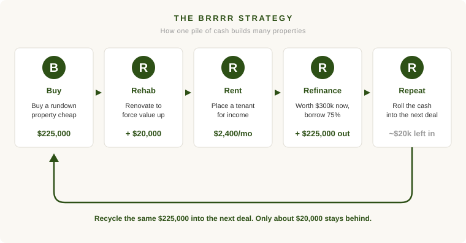

Two investors each have $245,000. The first wants to turn it into something much larger over the next fifteen years. The second already has enough, and mostly wants to make sure it's still there when she needs it. They will read the same headlines, hear the same advice, and be offered the same products. And almost all of that advice will be wrong for at least one of them.
The reason is that they aren't actually playing the same game. Most financial advice pretends there's a single right way to invest. There isn't. There are two very different jobs money can do, and the asset that's perfect for one job is often a poor fit for the other.
The first job is growth. The second is preservation. Knowing which one a particular dollar is supposed to do is the most useful thing you can sort out before you invest it.
The Idea That Separates the Two: Capital Efficiency
When your goal is to grow, the enemy is idle money. Every dollar that isn't working at a high rate of return is a dollar falling behind. Professionals have a phrase for this. They talk about capital efficiency, which is just a fancy way of asking: how hard is each dollar working, and how much of my money is tied up to earn it?
If you're trying to grow, capital efficiency is everything. You want your money in things that compound at high rates, and you don't want large sums sitting still. The stock market is the obvious example. So is value-add real estate, where you buy something underperforming, improve it, and force its value up.
When your goal is preservation, capital efficiency barely matters. You are not trying to squeeze the maximum return out of every dollar. You're trying to keep the dollars you have and collect a steady, predictable income from them. A portfolio of high quality bonds does this. So does a paid-off, well-located rental property that quietly produces rent every month. Nobody would call a paid-off rental capital efficient. Most of your money is locked in the walls. But if your job is preservation, that's not a flaw. That's the point.
This is why the same person can give two opposite answers depending on which dollar we're talking about. The capital efficiency that's essential for the grower is close to irrelevant for the preserver.
This Is Just "Train for Your Race" Again
I've written before that you should invest for your goals, not to beat an index. Capital efficiency is the same idea, seen from a different angle.
A sprinter and a marathoner both train hard, but they train for opposite things, and a workout that makes one faster would ruin the other. Investing works the same way. The grower needs capital efficiency the way a sprinter needs explosive speed. The preserver needs stability and income the way a marathoner needs endurance. Neither is training wrong. They're training for different races.
The mistake isn't choosing growth or choosing preservation. The mistake is using a preservation tool to run a growth race, or taking growth-level risk with money you can't afford to lose.
Real Estate Shows This Better Than Anything
Stocks and bonds make the contrast clean, but real estate makes it vivid, because the same project can serve either goal depending on what you do after the work is done.
Picture a single value-add deal. You buy a tired house for $225,000, put $20,000 into a renovation, and when you're finished it's worth about $300,000 and rents for $2,400 a month. Two investors each start with the same $245,000 in cash, and each does this exact deal. What happens next is the only thing that separates them, and neither one is allowed to add a single dollar of outside money ever again.
The first investor pays cash and keeps the house. She owns it free and clear, collects the rent, and lets it appreciate. This is the preservation play. All $245,000 of her money is now parked in one quiet, durable asset, and she's fine with that.
The second investor runs the BRRRR strategy: Buy, Rehab, Rent, Refinance, Repeat. He pays cash for the same house, but once it's fixed up and worth $300,000, he refinances it at 75% of the new value. That puts a $225,000 loan on the property and hands him back $225,000 of his original cash. He keeps the house, rents it out, and rolls that recovered cash into the next deal. Because each finished house only ever ties up about $20,000 of real equity, that one pile of money stretches a remarkably long way. He does one deal a year for five years, funded entirely by the cash his own properties keep handing back.

Here's where the two investors stand.
| Buy & Hold | BRRRR (one deal/year) | |
|---|---|---|
| Starting cash | $245,000 | $245,000 |
| Outside money added later | $0 | $0 |
| Properties owned | 1 | 5 |
| Real estate controlled | ~$348,000 | ~$1.64 million |
| Mortgage debt | $0 | ~$1.09 million |
| Equity in property | ~$348,000 | ~$553,000 |
| Cash flow collected (5 yrs) | ~$105,000 | ~$46,000 |
| Original cash still on hand | ~$0 | ~$145,000 |
| Net worth from that $245k | ~$453,000 | ~$744,000 |
Same opening move, same money, wildly different outcomes. The preserver turned $245,000 into one calm house and a healthy $105,000 of rent over five years. Her net worth grew to about $453,000.
The grower took the identical starting deal and, by refinancing and recycling, built a five-house portfolio worth $1.6 million. His net worth reached about $744,000. Here's the part that captures capital efficiency better than anything: he did it without ever adding outside money, and he still has roughly $145,000 of the original cash sitting unused. The preserver spent every dollar to own one house. The grower built five and barely touched his principal. Each of his dollars simply did far more work.
The Catch You Should Hear Clearly
That second column is not a free lunch, and anyone who sells it as one is selling something.
Look at the debt. The grower controls $1.6 million of property, but he owes $1.09 million of it across five mortgages. The preserver owes nothing. She could ride out almost anything: a bad tenant, a broken furnace, a soft appraisal, a long stretch of high interest rates. The grower has far less room for error on any one of his five loans, and one bad refinance appraisal can strand a deal mid-cycle. Notice his cash flow too. He collected less than half what she did, because pulling the maximum loan out of each house leaves a big payment eating the rent. He's betting on equity and growth, not income.
That's the real trade. Capital efficiency buys you growth, and it pays for that growth with leverage, risk, and thinner cash flow along the way. Which is exactly why it belongs to the grower and not the preserver.
So Which Dollar Is This?
The useful question was never "should I grow or preserve my money." Most of us do both at once, and the balance shifts as life goes on. You lean toward growth and capital efficiency in your building years, and toward preservation and steady income as you get closer to needing the money.
So don't ask whether you're a grower or a preserver. Ask it one dollar at a time. What is this particular dollar for? If its job is to grow, keep it working and don't tolerate it sitting idle. If its job is to be there when you need it, let it sit, and stop worrying about how hard it's working. The worst portfolios I see aren't the ones that chose wrong. They're the ones that never asked the question at all.
A note on the numbers. Both investors start with $245,000 and never add outside money. The deal in both columns is identical: a $225,000 purchase plus $20,000 of renovation ($245,000 all-in), producing a property worth $300,000 and renting for $2,400 a month. The buy-and-hold investor pays cash and owns one house free and clear. The BRRRR investor buys the first house in cash, then refinances each property at 75% of its $300,000 value, recovering $225,000 and leaving roughly $20,000 of equity behind in each deal, which lets the same money fund one new purchase a year. The figures assume 3% annual appreciation, a 7% thirty-year mortgage, about $650 a month in operating costs per property, and flat rent. They are rounded and meant to illustrate the difference between the two strategies, not to predict any specific result.